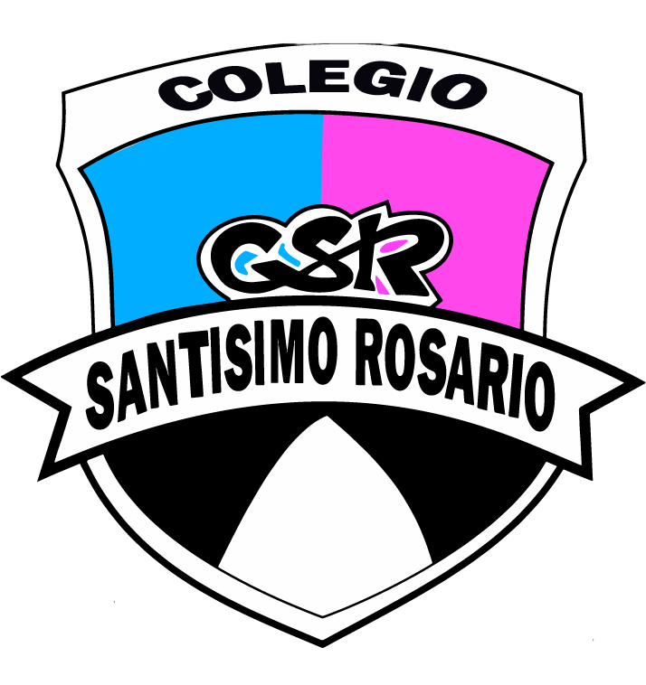

Galería Audiovisual
Documental y Proceso



"Educar dando sentido a la vida en el encuentro con los otros y en el cuidado integral de la creación"
Ciencia, Tecnología y Sustentabilidad
Un proyecto de química verde desarrollado por alumnos de 4° Año "B" para combatir la contaminación plástica utilizando almidón y yerba mate de descarte.
En la comunidad de Monteros, y a nivel global, enfrentamos un desafío sin precedentes: la acumulación de plásticos de un solo uso. En la jardinería, las macetas de polietileno (PEBD) son desechadas masivamente, tardando cientos de años en degradarse.
"¿Es posible sintetizar un biopolímero biodegradable a partir de almidón de maíz y yerba mate de descarte, que permita confeccionar eco-macetas funcionales para la sustitución del plástico tradicional?"
Nuestra hipótesis plantea que mediante la química de síntesis, utilizando glicerina como plastificante y fibra de yerba mate como refuerzo, podemos crear un contenedor orgánico que proteja a la planta y que, al ser enterrado, se degrade en menos de 90 días actuando como abono.
Desarrollar un proyecto científico de carácter interdisciplinario bajo la metodología STEAM que permita la obtención de un biopolímero eco-compatible a partir de recursos renovables y residuos locales, promoviendo la conciencia ecológica y la innovación tecnológica en los alumnos de 4.° año del Colegio Santísimo Rosario.
Tiempo de Degradación
< 90 Días
Este proyecto articula cinco áreas fundamentales para resolver un problema real de nuestra comunidad, integrando desde la química verde hasta la analítica de datos.
Foco Principal · Grupo 1
Química del carbono aplicada a polisacáridos. Gelatinización del almidón, plastificación con glicerina y el composite celulósico de yerba mate. Principios de biodegradación aeróbica y economía circular.
Informática · Grupo 3
Desarrollo de esta landing page con gráficos interactivos de datos experimentales. Integración con Google Sheets API para visualización de resultados. Códigos QR para acceso desde el stand.
Laboratorio · Grupos 1 y 2
Operaciones unitarias a escala escolar: pesaje de precisión, control cinético de temperatura, agitación mecánica y curado. Diseño y construcción de moldes para la conformación geométrica.
Diseño Gráfico · Grupo 2
Teoría del color aplicada a productos sustentables. Creación de logotipo, paleta cromática y tipografía institucional. Tratamiento superficial del biopolímero para texturas rústicas con valor comercial.
Estadística · Grupo 4
Proporciones estequiométricas en la formulación del bioplástico. Análisis estadístico de los datos de biodegradación: medias, desvíos y curvas de tendencia. Cálculo de frecuencias relativas y absolutas.
Comprender la química detrás de las Eco-Macetas.
El almidón está compuesto por dos polímeros de glucosa: amilosa (lineal) y amilopectina (ramificada). Para transformarlo en plástico, rompemos su estructura cristalina insoluble mediante el calor y el agua en un proceso llamado gelatinización.
El ácido acético (vinagre) actúa como catalizador hidrolítico, rompiendo ramificaciones para linealizar las moléculas. La glicerina se intercala entre las cadenas como plastificante, reemplazando fuerzas de atracción excesivas y dotando al bioplástico de flexibilidad, evitando que sea quebradizo al secar.
Actuando como un material compuesto (composite), la matriz es el almidón y la fase de refuerzo es la fibra de yerba mate seca. La celulosa de la yerba incrementa el Módulo de Young (dureza y resistencia) y reduce la contracción del material durante el curado.
El presente proyecto se define como una investigación de tipo experimental, descriptiva y tecnológica. Sigue un enfoque mixto (cualitativo y cuantitativo), dividido en cuatro fases metodológicas consecutivas:
Diseño y aplicación de encuestas digitales a la comunidad educativa para medir el nivel de conocimiento sobre los bioplásticos y evaluar la aceptabilidad de un producto eco-sustentable en Monteros.
Desarrollo de múltiples ensayos controlados modificando las variables estequiométricas (proporciones de reactivos) para identificar la formulación con mejor desempeño físico.
Confección de prototipos y moldes para el prensado mecánico de las macetas, junto con el desarrollo de la imagen de marca y canales de comunicación digital.
Entierro controlado de muestras para registrar la tasa de pérdida de masa en sustrato biológicamente activo durante un periodo de observación.
El desarrollo ejecutivo del proyecto por parte de los estudiantes se estructuró de acuerdo a las pautas y consignas establecidas para cada comisión interna de trabajo:
| Grupo / Comisión | Consigna y Tarea Asignada | Entregable Final |
|---|---|---|
|
Grupo 1:
Investigadores de Laboratorio
|
Ejecutar la síntesis química del bioplástico. Probar proporciones variables, registrar tiempos de cocción, temperaturas y documentar el proceso de curado. |
Protocolo de laboratorio optimizado y muestras físicas del material compuesto.
|
|
Grupo 2:
Diseñadores de Producto e Imagen
|
Diseñar la forma, dimensiones y espesor de las macetas. Desarrollar el logotipo, la paleta de colores de la marca y seleccionar tipografías institucionales. |
Moldes de producción funcionales y etiquetas con diseño estético sustentable.
|
|
Grupo 3:
Tecnólogos y Programadores
|
Diseñar la estructura de datos en Google Sheets para el laboratorio. Desarrollar el sitio web interactivo en Google Sites y configurar los códigos QR de acceso. |
Sitio Web publicado y códigos QR listos para el stand de la feria.
|
|
Grupo 4:
Analistas Sociales y de Mercado
|
Formular, distribuir y procesar la encuesta digital a la comunidad. Realizar la entrevista al especialista y elaborar las proyecciones de viabilidad económica. |
Informe estadístico tabulado con gráficos explicativos y modelo de negocio.
|
Mezclar los 200mL de agua destilada con 30g de almidón. Agitar vigorosamente en vaso de precipitados hasta lograr una suspensión libre de grumos.
Añadir 20mL de ácido acético y 25mL de glicerina. Agitar durante 2 minutos para homogenizar interacciones químicas.
Agregar 15g de yerba mate tamizada. Calentar en plancha a 90°C bajo agitación constante. A los 7-10 minutos transiciona a un gel translúcido.
Verter el gel caliente en los moldes aplicando presión. Secar en ambiente ventilado por mínimo 72 horas para evaporar el solvente.
Resultados experimentales del proyecto Eco‑Macetas.
6,2 kg por persona
30.000 habitantes
185 toneladas/año


Asistente Virtual IA